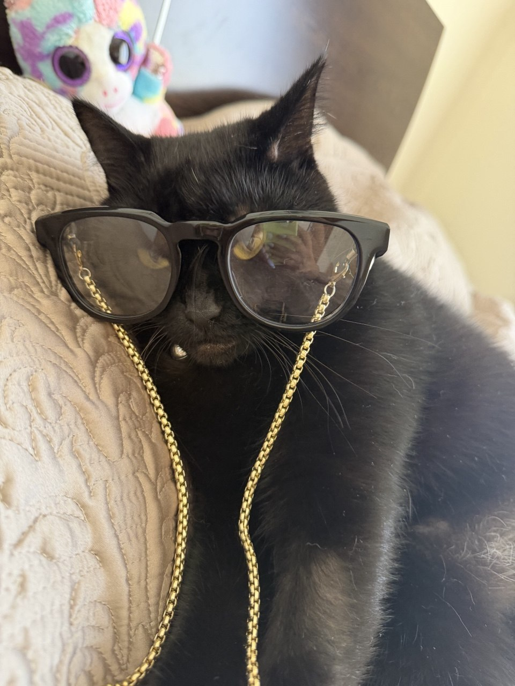

Мій кіт Фунтик не простий кіт, він приїхав із Слов"янську, де бойові дії, тому він боїться коли він відчуває якусь сильну вібрацію, або чує громкий звук. В нас він буває сам хоче на ручки, а буває не хоче навіть підходити до хозяїна. Він в нас товстий, вісе 5 кілограмів. Один раз навіть впав з другого поверху тому що налякався пилесосу і поврідив собі лапу, але з ним зараз все добре.